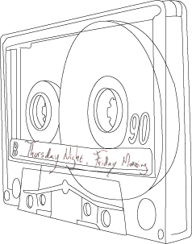
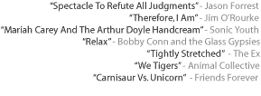
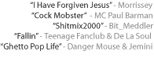

Pop, soda, Coke: Whatever you tell the waitress at 9 in the morning in your part of the country, it's all the same. And whatever the local colloquial phrasing calls for, it still consists of carbonated water and high-fructose corn syrup. The mixture maybe slightly sweeter if you're in the South, or possibly fizzier if you're nearer to Big Sky country out West, but the foundation remains the same, and it's still teeth-rottingly good. Just like the music that shares its name, pop is rarely good for you but is always good. And it's not what your mother would like to see you wash down a breakfast of French fries with either.
Soda pop doesn't actually mean anything. It might easily be argued that its second part – a part that is more a sound than a word, “pop” – has no meaning either. The same goes for its musical counterpart. “It's the same old pop stuff,” or “It was alright, they mostly played standard pop-fare,” is often heard, as though pop were the same as pulp (and even Faulkner wrote pulp, so did Lou Reed make pop), or as if it were synonymous with dismissible. And it isn't. Though hollow behind the wonderful shape the word “Soda Pop” forces the mouth to make, there is so much room in that hollow to invite its being filled with flavor and meaning. With a little patience and a lot of trial and error, there could be more flavors of pop than there would be memories and experiences to tie them to.
There's Coke- and outside the city limits of Memphis everything is Coke. “What type of Coke, honey?” It's something that takes some getting used to. Everything is pop music unless it says otherwise, and even then it is more so. But what type? A song is anything, a limit in the number of notes, but never in the material. A pop that tastes like the grass-stains on denim and scabbed knees of Tuesday summer night. It has to be sweet and loaded with stay-up but other than that, you can have whatever type of coke you'd like.
| go to Side A song 1 |